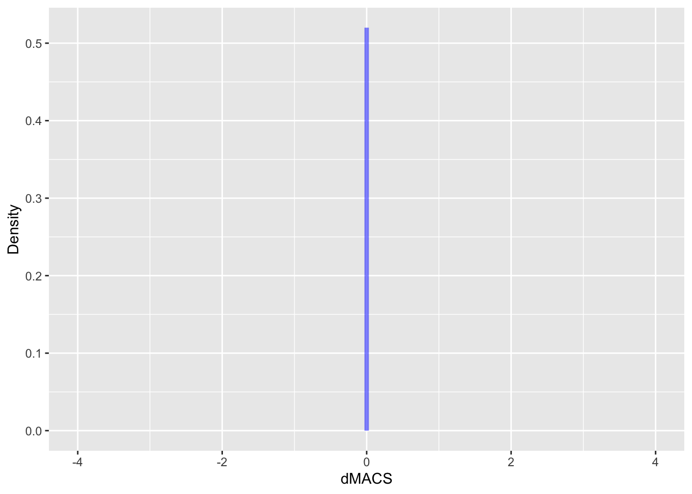
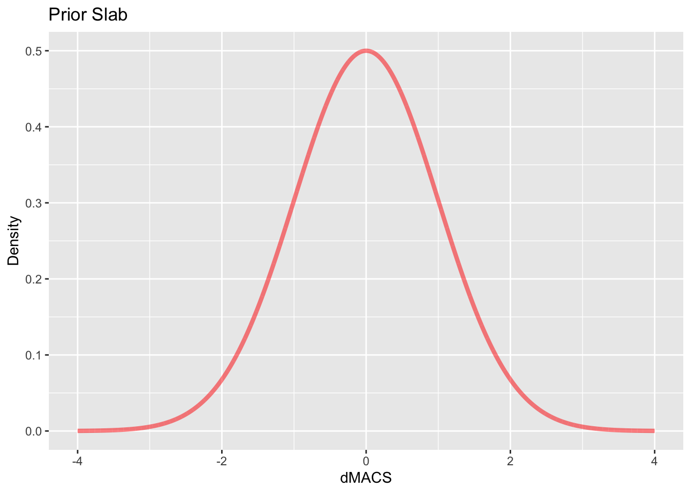
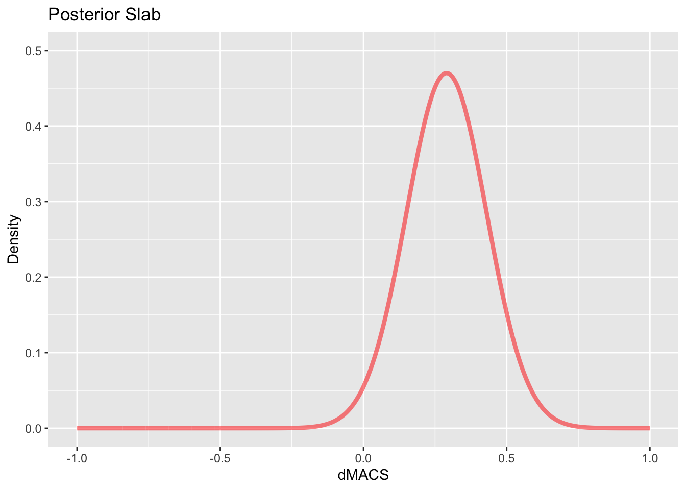
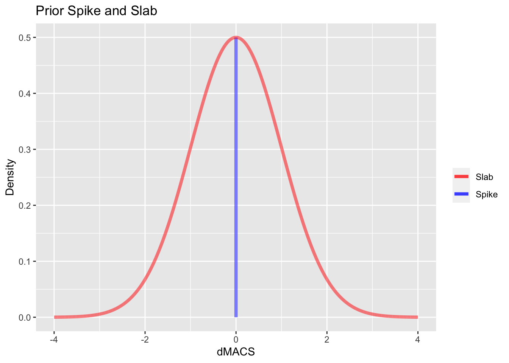
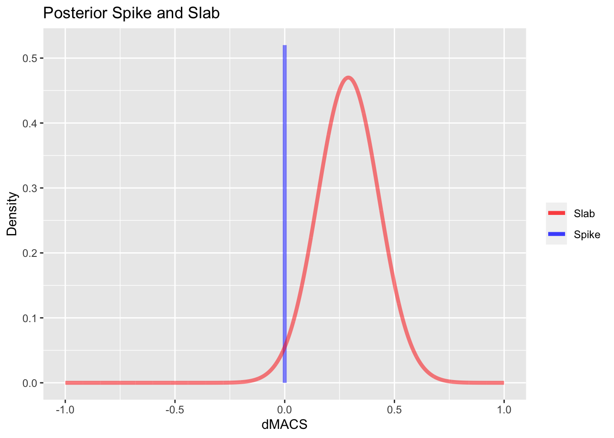

suppressWarnings(library(tidyverse))## ── Attaching core tidyverse packages ──────────────────────── tidyverse 2.0.0 ──
## ✔ dplyr 1.1.0 ✔ readr 2.1.4
## ✔ forcats 1.0.0 ✔ stringr 1.5.0
## ✔ ggplot2 3.4.1 ✔ tibble 3.2.1
## ✔ lubridate 1.9.2 ✔ tidyr 1.3.0
## ✔ purrr 1.0.1
## ── Conflicts ────────────────────────────────────────── tidyverse_conflicts() ──
## ✖ dplyr::filter() masks stats::filter()
## ✖ dplyr::lag() masks stats::lag()
## ℹ Use the ]8;;http://conflicted.r-lib.org/conflicted package]8;; to force all conflicts to become errorsThis portfolio is a continuation of my previous one. In this one I want to make graphics that show how exactly the prior and posterior distribution should look for the spike and the slab.
The spike’s prior is simply the probability of the effect (in the case of my thesis, this would be dMACS) being zero. Since we weight the spike prior equally to the slab, this should simply be a straight vertical line at 0 with length of 0.5. The y-axis represents the probability
spike_prior <- tribble(~dMACS, ~Density,
0, 0,
0, 0.5)
spike_prior_graph <- spike_prior %>% ggplot(aes(x=dMACS,y=Density))+
geom_line(color = "blue", linewidth = 1.5, alpha = 0.5) +
xlim(-4,4)
spike_prior_graphOk this is good, but now let’s show what happens when we present data that in favor of it, that is the probability of the effect being zero increases a bit. ### Calculating dMACS
spike_post <- tribble(~dMACS, ~Density,
0, 0,
0, 0.52)
spike_post_graph <- spike_post %>% ggplot(aes(x=dMACS,y=Density))+
geom_line(color = "blue", linewidth = 1.5, alpha = 0.5) +
xlim(-4,4)
spike_post_graph
Now of course this all doesn’t look too interesting, all I did was increase the height of the line. However, now I will show the prior and posterior DISTRIBUTION of the slab and this is where things start to look cool.
The slab-prior is quite easy. It is just a normal distribution centered at 0 and with standard deviation of 1.
x<-seq(-4,4, length.out = 1e4)
y<-dnorm(x)
y<-y/max(y)*(.5)
slab_prior <- tibble(x = x, y = y)
graph_prior_graph<-slab_prior %>% ggplot(aes(x=x,y=y))+
geom_line(alpha=0.5, color = "red", linewidth = 1.5) +
labs (title = "Prior Slab",
x = "dMACS",
y = "Density")
graph_prior_graph
Again nothing new, just a normal distribution. However, what if we introduce data that shows that the effect size is not 0 and there is actually an effect occuring. If this is the case, then we should update our prior distribution of the slab. In this case let’s assume we calculated a new posterior distribution that is N(.29,.14).
x<-seq(-4,4, length.out = 1e4)
y<-dnorm(x,.29,.14)
y<- y/max(y)*(.47)
slab_post <- tibble(x = x, y = y)
slab_post_graph <- slab_post %>% ggplot(aes(x=x,y=y)) +
geom_line(alpha=0.5, color = "red", linewidth = 1.5) +
labs (title = "Posterior Slab",
x = "dMACS",
y = "Density")
slab_post_graph +
xlim(-1,1) +
ylim(0,0.5)## Warning: Removed 7500 rows containing missing values (`geom_line()`).
Wow! Look at that. Clearly there is a change once new data is introduced. The data errs on the side that there is an effect, therefore the posterior distribution is to the right of zero. The data also becomes less spread if you notice the y-axis. You should also notice that its height has decreased. This is because we are also updating the prior probability of there being an effect which is just 1 minus the posterior probabilty of there being no effect.
Ok well now I have quite a lot of graphs here, but perhaps it might be useful to also display the graphs with the spike and the slab. I shall make two graphs, one with the prior spike and slab and one with the posterior spike and slab.
ggplot() +
geom_line(data = spike_prior, aes(x=dMACS,y=Density, color = "Spike"),
alpha=0.5, linewidth = 1.5) +
geom_line(data = slab_prior, aes(x=x,y=y, color = "Slab"),
alpha=0.5, linewidth = 1.5) +
labs (title = "Prior Spike and Slab",
x = "dMACS",
y = "Density",
color = "") +
scale_color_manual(values = c("Slab" = "red", "Spike" = "blue" )) +
xlim(-4,4)
Good. Now let’s make the posterior.
ggplot() +
geom_line(data = spike_post, aes(x=dMACS,y=Density, color = "Spike"),
alpha=0.5, linewidth = 1.5) +
geom_line(data = slab_post, aes(x=x,y=y, color = "Slab"),
alpha=0.5, linewidth = 1.5) +
labs (title = "Posterior Spike and Slab",
x = "dMACS",
y = "Density",
color = "") +
scale_color_manual(values = c("Slab" = "red", "Spike" = "blue" )) +
xlim(-1,1)## Warning: Removed 7500 rows containing missing values (`geom_line()`).